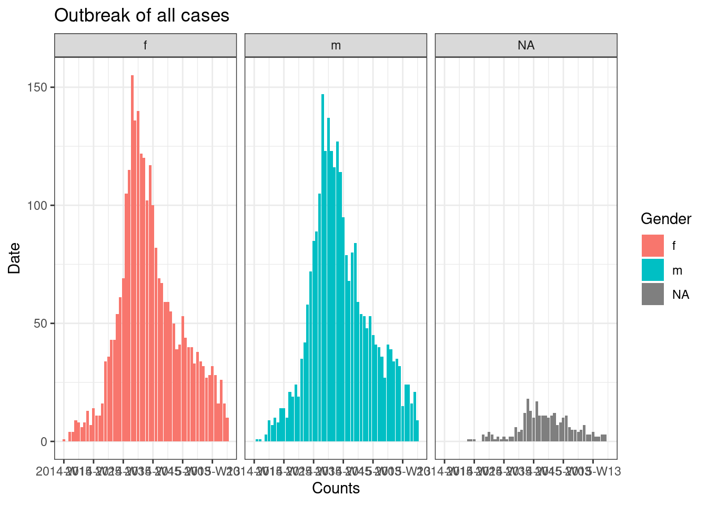

16 ループと反復処理・リストの操作
疫学業務担当者は、国、地域、年齢などによって層別化されたグループを対象に、同じ分析を繰り返し行う必要があります。他にも、非常に多くの場面で反復処理が必要となります。この章では、このような反復処理をより速く、より正確に、そしてより短いコードで行う方法を解説します。
本章では、反復処理を行うための2つの方法、すなわち、for ループを使用する方法と purrr パッケージを使用する方法を紹介します。
一連の入力されたデータ（本章では、インプット（input）と呼ぶ）に対してコードを反復する for ループは、他のプログラミング言語に比べて R ではあまり一般的ではありませんが、ここでは学習の一貫として参考までに紹介します。
purrr パッケージは、反復処理を行うためのパッケージであり、tidyverse パッケージに含まれています。値、列、データセットなどのインプットに対して関数を「マッピング（mapping）」し、反復処理を行います。
本章では主に、以下の項目に関し、いくつか例を用いて説明します。
- 複数のファイルのインポート・エクスポート
- 複数の管轄区ごとの流行曲線（エピカーブ）の作成
- データフレーム内の複数の列に対する t 検定の実行
また、16.3 purrr とリスト では、リスト（list） の作成と処理の例をいくつか紹介します。
16.1 準備
パッケージを読み込む
以下のコードを実行すると、分析に必要なパッケージが読み込まれます。このハンドブックでは、パッケージを読み込むために、pacman パッケージの p_load() を主に使用しています。p_load() は、必要に応じてパッケージをインストールし、現在の R セッションで使用するためにパッケージを読み込む関数です。また、すでにインストールされたパッケージは、R の基本パッケージである base （以下、base R）の library() を使用して読み込むこともできます。R のパッケージに関する詳細は R の基礎 の章をご覧ください。
pacman::p_load(
rio, # インポート・エクスポートのためのパッケージ
here, # ファイルの場所の指定のためのパッケージ
purrr, # 反復処理のためのパッケージ
tidyverse # データ管理と視覚化のためのパッケージ
)データをインポートする
エボラ出血熱の流行をシミュレートしたデータセットをインポートします。お手元の環境でこの章の内容を実行したい方は、 クリックして「前処理された」ラインリスト（linelist）データをダウンロードしてください>（.rds 形式で取得できます）。データは rio パッケージの import() を利用してインポートしましょう（rio パッケージは、.xlsx、.csv、.rds など様々な種類のファイルを取り扱うことができます。詳細は、インポートとエクスポート の章をご覧ください。）
# ラインリストをインポートする
linelist <- import("linelist_cleaned.rds")ラインリストの始めの 50 行は、以下の通りです。
16.2 for ループ
R における for ループ
for ループは R ではあまり一般的ではありませんが、他のプログラミング言語では頻繁に使用されています。初心者の方にとって、for ループは反復処理ごとに何が起こっているのかを正確に把握しやすく、コードの確認やデバッグがしやすいため、反復処理の学習や練習に役立ちます。
for ループを扱うこのセクションを飛ばして、purrr パッケージでマッピングした関数を使用し反復処理を行う方法を紹介する 16.3 purrr とリスト に移動しても構いません。
中心となる要素
for ループは以下の 3 つの主要な部分から成り立っています。
- 繰り返し実行するアイテムのシーケンス
- シーケンス内の各アイテムに対して実行されるオペレーション
- 結果を格納するコンテナ （必須ではなく、必要な場合のみ作成する）
以下に示しているように、基本的な構文は for (アイテム in シーケンス) {アイテムを用いたオペレーションの指示}です。括弧と波括弧の違いに注意してください。結果は、コンソールに出力したり、コンテナに格納したりすることができます。
簡単な for ループの例を以下に示します。
for (num in c(1,2,3,4,5)) { # シーケンスの定義（1 から 5 の数）と "{" によるループの開始
print(num + 2) # オペレーション（それぞれのシーケンス内の数に 2 を足して表示してください）
} # "}" によるループの終了 ## [1] 3
## [1] 4
## [1] 5
## [1] 6
## [1] 7
# この例では、結果をコンテナに格納していないシーケンス
これは、for ループにおいて “for” で示されている部分です。オペレーションはシーケンス内の各アイテムに対して（“for” each item）実行されます。シーケンスには、一連の値（管轄区名、疾患名、列名、リスト要素など）や、一連の連続した数値（1, 2, 3, 4, 5 など）を指定することができます。以下で説明するように、それぞれに実用性があります。
シーケンス文の基本構造は、アイテム in ベクトルです．
- 「アイテム」の部分には任意の文字や単語を書くことができます（例：“i”, “num”, “hosp”, “district” など）。この「アイテム」の値は、ループを繰り返すたびにベクトル内の各値に、指定された順番で変化していきます。
- ベクトルには、文字列や列名、あるいは数字列などを用いることが出来ます。ループを繰り返すたびに変化していく値であり、これらの値は、「アイテム」を用いたオペレーションの指示により、「for ループ」 の中で使用されます。
例：文字列のシーケンス
この例では、あらかじめ病院名の文字ベクトルを定義し、その各値に対してループを実行します。
# 病院名のベクトルを作成する
hospital_names <- unique(linelist$hospital)
hospital_names # 作成したベクトルを表示する## [1] "Other"
## [2] "Missing"
## [3] "St. Mark's Maternity Hospital (SMMH)"
## [4] "Port Hospital"
## [5] "Military Hospital"
## [6] "Central Hospital"ここでは、hospital_names の値を、hosp という単語を使って示しています。一番最初に実行されるループでは、hosp の値は hospital_names[[1]] 、2 回目のループでは hospital_names[[2]] となります。
# 文字列シーケンスに対する 'for ループ'
for (hosp in hospital_names){ # シーケンス
# オペレーションがここに来る
}例：列名のシーケンス
これは、上記の文字列のシーケンスの変形で、既存の R オブジェクトの名前（例えば、データフレームの列名など）を抽出してベクトルとしたシーケンスです。便利なことに、for ループのオペレーションコードでは、列名を用いて元のデータフレームを指定する（サブセットする）ことが出来ます。
下の例では、linelist データフレームの names()（列名）がシーケンスです。「アイテム」の名前は col で、ループが繰り返すに従い、その表す値が各列名に変化します。
例として、for ループの中に、シーケンスの値ごとに実行されるオペレーションを加えます。この例では、シーケンスの値（列名）を使って、linelist の列名を一つずつ指定して（サブセットして）います。オペレーションコードでは、R の基礎 の章で説明したように、二重角括弧 [[ ]] を使用してサブセットします。そして、ループにより指定された列は is.na()、次に sum() に渡され、列内の欠損値の数を算出します。結果として、コンソールに欠損値の数が各列ごとに表示されます。
列名を用いてインデックスする場合の注意点：列自体を指定したいときには、 単に “col” と書いてはいけません！ col は、単に列の名前を表しています。列内の値全体を指定するには、linelist[[col]] と書いて列名を linelist のインデックスとして使用する必要があります。
for (col in names(linelist)){ # linelist内の各列に対するループ：列名は "col" で表されている
# オペレーションコードの例：各列の欠損地の数を表示する
print(sum(is.na(linelist[[col]]))) # "col"の値は反復処理の繰り返しごとに変化し、linelist は "col" のその時々の値によってインデックスされる
}## [1] 0
## [1] 0
## [1] 2087
## [1] 256
## [1] 0
## [1] 936
## [1] 1323
## [1] 278
## [1] 86
## [1] 0
## [1] 86
## [1] 86
## [1] 86
## [1] 0
## [1] 0
## [1] 0
## [1] 2088
## [1] 2088
## [1] 0
## [1] 0
## [1] 0
## [1] 249
## [1] 249
## [1] 249
## [1] 249
## [1] 249
## [1] 149
## [1] 765
## [1] 0
## [1] 256例：数字のシーケンス
次は、連続した数字の列をシーケンスとして用いる例を説明します。「アイテム」の値は文字値（“Central Hospital” や “date_onset” など）ではなく数字となり、データフレームをループする際に便利です。for ループ内で「アイテム」の番号を使うことで、データフレームを行番号でインデックスすることができます。
例えば、データフレーム内のすべての行をループして、ある情報を抽出したい場合、「アイテム」は行番号になります。この場合、「アイテム」は i と書かれることが多いです。
for ループの処理を言葉で説明すると、「1 からデータフレームの行の総数までの数からなるシーケンス内のすべてのアイテムに対して、X を行う」となります。一番最初に実行されるループでは、「アイテム」i の値は 1 です。2 回目のループでは、i は 2 になります。
このシーケンスをコードにすると、次のようになります：for (i in 1:nrow(linelist)) {#オペレーションのコード}。i は「アイテム」を表し、1:nrow(linelist) は、1 から linelist の総行数までの連続した数字からなるシーケンスを表しています。
for (i in 1:nrow(linelist)) { # データフレームに対して使用
# オペレーションのコードがここに来る
} シーケンスを数字にしたいが、（データフレームではなく）ベクトルを用いる場合は、 seq_along() を使うことで、ベクトルの各要素に対する添字のシーケンスを得ることが出来ます。例えば、for (i in seq_along(hospital_names) {#オペレーションのコード} とします。
以下のコードによって添字を得ることができ、その添字がループの i の値になります。
seq_along(hospital_names) # 名前のついているベクトルに対して使用## [1] 1 2 3 4 5 6シーケンスに添字を使うと、ループの出力結果を格納するコンテナのインデックスとして、i 番号を簡単に使用できるという利点があります。詳しくは、次のオペレーションのセクションで例を示して説明します。
オペレーション
オペレーションは、for ループの中の波括弧 { } の中に記述されているコードのことです。オペレーションコードは、シーケンス内の各「アイテム」ごとに実行される必要があります。したがって、「アイテム」によって変化するコードの各部分が、実際に変化するように正しくコードされているか注意する必要があります。例えば、インデックスには [[ ]] を使うことを忘れないでください。
以下の例では、linelist データフレームの各行に対して反復処理を実行します。各行の gender と age の値を結合し、文字ベクトルのコンテナである cases_demographics に格納する作業を行います。また、[[i]] を使ってインデックスすることで、ループの出力結果を「コンテナ」のベクトルの正しい位置に保存しているところもポイントです。
# 結果を格納するコンテナを作成する：文字ベクトル
cases_demographics <- vector(mode = "character", length = nrow(linelist))
# for ループ
for (i in 1:nrow(linelist)){
# オペレーション
# 角括弧をインデックスに用いることで、linelist の i 行の値を取り出す
row_gender <- linelist$gender[[i]]
row_age <- linelist$age_years[[i]] # インデックスを忘れずに！
# genderとageを結合し、コンテナのベクトル内のインデックスされた場所に格納する
cases_demographics[[i]] <- str_c(row_gender, row_age, sep = ",")
} # ループの終了
# 最初の 10 行を表示する
head(cases_demographics, 10)## [1] "m,2" "f,3" "m,56" "f,18" "m,3" "f,16" "f,16" "f,0" "m,61" "f,27"コンテナ
for ループの結果はコンソールに表示したり、RStudio プロットペインに出力したりすることができます。また、後で使用するためにループの実行結果を「コンテナ」に保存しておきたい場合もあります。出力を保存するコンテナとして、ベクトル、データフレーム、あるいはリストなどを使用することが出来ます。
出力結果を保存するコンテナは、for ループを開始する前に、データが何も入っていない空のベクトル、データフレーム、またはリストを作成するのが最も効率的です。空のコンテナは、ベクトルやリストの場合は vector() で、データフレームの場合は matrix() や data.frame() を使用して作成することができます。
空のベクトルを作成する
vector() を使用し、ループの出力結果を挿入するオブジェクトの想定されるデータ型を mode = で指定します（数値データを格納する “double”、“character”、または “logical”のいずれかを指定）。また、事前に length = を指定する必要があります。これは、for ループのシーケンスの長さになります。
例えば、各病院の入院までの時間の中央値を格納したいとします。その場合、“double” を使用し、予想される出力数（ここではデータセット内の病院の数）を length として設定します。
delays <- vector(
mode = "double", # 数値データを格納する
length = length(unique(linelist$hospital))) # データセット内の病院の数空のデータフレームを作成する
下のコードのように、行と列の数を指定することで、空のデータフレームを作ることができます。
delays <- data.frame(matrix(ncol = 2, nrow = 3))空のリストを作成する
for ループで作成した図（プロット）をリストに格納したい場合は、空のリストを作成します。リストとベクトルは似ていますが、リストは複数の異なるデータ型の R オブジェクトを格納することが出来ます。リストの中のアイテムは、数値、データフレーム、ベクトル、を取ることができることのほか、別のリストを取ることもできます。
空のリストを作成する際には、ベクトルを作成した時と同じように vector() を使用しますが、mode = "list" とする必要があります。長さは好きなように指定してください。
plots <- vector(mode = "list", length = 16)コンテナを使用せず結果を表示する
なお、for ループ内で出力結果を表示する場合は、print() で指示する必要があります。
以下の例では、シーケンスは文字ベクトルであり、これを使用して病院ごとにラインリストをサブセットしています。結果はコンテナには保存されず、print() によってコンソールに出力されています。
for (hosp in hospital_names){
hospital_cases <- linelist %>% filter(hospital == hosp)
print(nrow(hospital_cases))
}## [1] 885
## [1] 1469
## [1] 422
## [1] 1762
## [1] 896
## [1] 454for ループの動作確認を行う
意図したようにループが動作するか確認するために、i <- 10 や hosp <- "Central Hospital" など、「アイテム」を一時的に代入するコマンドを実行します。これをループの外で行い、その後、オペレーションコードのみ（波括弧内のコード）を実行し、期待通りの結果が得られるかを確認します。
プロットをループする
前述した 3 つの要素（コンテナ、シーケンス、オペレーション）をすべて使用し、各病院の流行曲線（エピカーブ）を作成してみましょう（流行曲線についての詳細は、流行曲線（エピカーブ） の章をご覧ください）。
まず、incidence2 パッケージを使用し、すべての症例を性別ごとに色分けした流行曲線を作成します。
# 'incidence' のオブジェクトを作成する
outbreak <- incidence2::incidence(
x = linelist, # データフレームを指定する（linelist全体）
date_index = date_onset, # 日付の列
interval = "week", # 週ごとに集計
groups = gender, # 性別によるグルーピング
na_as_group = TRUE) # 性別の欠損値は欠損のグループ（NA）として扱う
# 流行曲線をプロットする
plot(outbreak, # incidence のオブジェクト名
fill = "gender", # 性別ごとにバーの色を変更
color = "black", # バーの外枠の色を指定
title = "Outbreak of ALL cases" # タイトルを指定
)
次に、各病院ごとに個別のプロットを作成するためには、この流行曲線のコードを for ループの中に入れる必要があります。
for ループを作成する最初のステップとして、病院名の入ったベクトル hospital_names を保存します。作成するfor ループは、病院の名前ごとに、各病院一度だけ実行されます：for (hosp in hospital_names)。hosp の値は、for ループが繰り返されるたびに、ベクトル内のそれぞれの病院名を表し、ループ内で使用されます。
ループ内では、通常通り R のコードを書くことができますが、「アイテム」（この場合は hosp）の値が変化することに注意してください。このループ内では、
- 列
hospitalがhospの値と同じになるように、linelistにfilter()を適用しています。 - incidence オブジェクトは、フィルタリングされたラインリストに対して作成されています。
- プロットには、各病院ごとに
hospを用いたタイトルが自動生成されます。 - 病院ごとに作成された各プロットは、一時的に保存され、そして表示されます。
- ループは次の繰り返しを実行し、
hospital_names内の次の病院に対して同じオペレーションが繰り返されます。
# 病院名が格納されたベクトルを作成する
hospital_names <- unique(linelist$hospital)
# hospital_names 内のそれぞれの病院名（"hosp"）ごとに、流行曲線を作成し表示する
for (hosp in hospital_names) {
# 反復処理ごとにその時々の病院に対して incidence オブジェクトを作成する
outbreak_hosp <- incidence2::incidence(
x = linelist %>% filter(hospital == hosp), # 現在反復処理が行われている病院名によって linelist をフィルタリングする
date_index = date_onset,
interval = "week",
groups = gender,
na_as_group = TRUE
)
# プロットを作成し保存する
# タイトルは現在反復処理が行われている病院名に合わせて自動生成される
plot_hosp <- plot(
outbreak_hosp,
fill = "gender",
color = "black",
title = stringr::str_glue("Epidemic of cases admitted to {hosp}")
)
# 現在反復処理が行われている病院のプロットを表示する
print(plot_hosp)
} # hospital_names 内の全ての病院名に対してオペレーションが行われた後、for ループを終了する 
ループの進捗状況を確認する
反復回数の多いループは、実行終了までに何分、何時間もかかることがあるため、進捗状況を R のコンソールに表示すると便利です。以下の if 文をループのオペレーションの中に配置することで、100 番目の数字ごとに結果を表示することができます。コード内で用いる際には、i が自分の作成したループ内の「アイテム」となるように適宜変更してください。
# 進捗を 100 回の反復処理のたびに示すループ
for (i in seq_len(nrow(linelist))){
# print progress
if(i %% 100==0){ # 演算子 %% は剰余を示す
print(i)
}16.3 purrr とリスト
反復処理のもう一つの方法として、purrr パッケージを使用する方法があります。purrr パッケージは tidyverse パッケージに含まれている反復処理を行うパッケージです。
同じタスクを何度も実行する必要がある場合、汎用性の高い方法を習得していると非常に便利です。この方法は、複数の管轄区域のプロットを作成する際や、多くのファイルをインポートして結合する際などに多くの場面で用いることができます。
purrr パッケージには他にもいくつか利点があり、パイプ %>% と一緒に使用できること、通常の for ループよりもエラー処理に優れていること、そして構文が非常にすっきりとしてシンプルであること、などが挙げられます。もし for ループを使っているのであれば、purrr パッケージを使うことでより明確で簡潔にコードを書くことができるでしょう。
コードを書く際は、purrr パッケージが関数型のプログラミングツールであることを念頭に置いて進める必要があり、繰り返し適用されるオペレーションは、関数内に示す必要があります。関数を書く方法について詳細を知りたい方は、関数の作成 の章をご覧ください。
また、purrr パッケージに含まれる関数は、多くの場合リストとベクトルに対して働くので、リストやベクトルの各要素に関数を適用すると考えてください！
パッケージを読み込む
purrr パッケージは tidyverse パッケージの一部なので、別々にパッケージをインストールする・読み込む必要はありません。
pacman::p_load(
rio, # インポート・エクスポート
here, # ファイルパス
tidyverse, # データの管理と視覚化
writexl, # 複数のシートを含むExcelファイルを作成
readxl # 複数のシートを含むExcelファイルをインポート
)
map()
purrr パッケージの中核となる関数の一つが map() です。map()は、与えられたリストやベクトルの各インプット要素に関数を「マッピング（mapping）」する（適用する）関数です。
基本的な構文は map(.x = シーケンス, .f = 関数, その他の引数) です。もう少し詳しく説明すると、
-
.x =は、.f関数が繰り返し適用されるインプットであり、例えば、管轄区名のベクトル、データフレームの列、またはデータフレームのリストです。 -
.f =は、入力.xの各要素に対して適用される関数です。これは、すでに存在するprint()のような関数でも、自分で定義したカスタム関数でも構いません。関数は、チルダ（~）の後に書かれることが多いです（詳細は後述します）。
構文を作成する際は、以下の点についてご注意ください。
- 関数がそれ以上引数を指定する必要がない場合は、括弧やチルダを使わずに書くことができます（例：
.f = mean）。全ての反復処理において同じ値になる引数がある場合、map()の中、かつ.f =の外で指定します（例：map(.x = my_list, .f = mean, na.rm = T)のna.rm = T）。 -
.x（または単に.）は、反復処理の.x値の代用値として、.f =関数の中で使用することができます。 - 関数をより細かく設定するには、チルダ構文（
~）を使用してください。関数を、括弧を用いて通常通り書いてください（例:map(.x = my_list, .f = ~mean(., na.rm = T))）。特に、引数の値が反復処理ごとに変化する場合や、値が.x自体である場合には、この構文を使用してください（以下の例を参照ください）。
map() を用いた際の出力はリストになります。リストはベクトルに似ていますが、構成要素が異なります。リストには、多くのデータフレーム、多くのベクトル、多くの単一の値、あるいは多くのリストが含まれる可能性があります。以下に説明するように、他のタイプの出力を生成する map() の代替関数があります（例えば、データフレームを生成する map_dfr()、文字ベクトルを生成する map_chr()、数字ベクトルを生成する map_dbl() など）。
例：エクセルシートをインポートし、結合する
疫学業務担当者の一般的なタスクを用いて説明します。例えば、症例データの入った Excel ファイルをインポートしたいが、ファイルには異なる名前シートが複数含まれており、その複数のシートに分かれて症例データが保存されている場合です。どうすれば複数のシートを効率的にインポートして 1 つのデータフレームにまとめることができるでしょうか？
以下のような Excel ファイルが送られてきたとします。病院ごとにシートが分かれており、各シートにはそれぞれの病院の症例が含まれています。

ここでは、map() を使った方法を紹介します。
-
import()を、各エクセルシートごとに実行するようにmap()する。 - インポートされた複数のデータフレームを
bind_rows()を使用して結合し、一つのデータフレームにまとめる。 - 一つにまとめる際、元の Excel シートの名前を新しい列に保存する。最終的なデータフレームで、各行の症例が、元々はどの Excel シートに保存されていたのか（どの病院で報告されたのか）をわかるようにする。
まず、シート名を抽出してオブジェクトに格納する必要があります。readxl パッケージの excel_sheets() にエクセルファイルのパスを渡し、シート名を抽出します。抽出されたシート名は、sheet_names という文字ベクトルに格納されます。
sheet_names <- readxl::excel_sheets("hospital_linelists.xlsx")各シートの名前は、以下の通りです。
sheet_names## [1] "Central Hospital" "Military Hospital"
## [3] "Missing" "Other"
## [5] "Port Hospital" "St. Mark's Maternity Hospital"これでシート名を格納したベクトルができたので、map() を用いて import() に 1 つずつ病院の名前を渡すことができます。この例では、sheet_names が .x であり、import() が .f となります。
インポートとエクスポート の章で説明したように、Excel ファイルで import() を使用する場合、引数 which = を用いてインポートするシートを指定することができます。map() の .f 関数に import() を使用し、 import() 内で which = .x と指定すると、反復処理を繰り返すたびに、ベクトル sheet_names の表す値が変化します。反復処理の最初の 1 回目では “Central Hospital” 、2 回目には “Military Hospital” となります。
注意点としては、map() を使用しているので、各 Excel シートのデータは、別々のデータフレームとしてリスト内に保存されることです。各リスト要素（リスト内に保存される各データフレーム）に適切な名前を付けるために、sheet_names を map() に渡す前に、purrr パッケージの set_names() に渡しています。
反復処理で作成されるリストは combined という名前で保存されます。
combined <- sheet_names %>%
purrr::set_names() %>%
map(.f = ~import("hospital_linelists.xlsx", which = .x))反復処理後に出力されたリストを確認すると、各 Excel シートのデータが名前付きリストに保存されていることがわかります。ここまで順調ですが、まだ完成形ではありません。

最後に、dplyr パッケージの bind_rows() を使用します。これは、互いに似たような構造をもつ複数のデータフレームが含まれたリストを受け取り、それらを 1 つのデータフレームに結合する関数です。リスト要素の名前（この例では、病院名）から新しい列を作成するために、引数 .id = を使用して新しい列に必要な名前を指定します。
以下が一連のコマンドの流れです。
sheet_names <- readxl::excel_sheets("hospital_linelists.xlsx") # シート名を抽出する
combined <- sheet_names %>% # シート名から開始
purrr::set_names() %>% # 名前を指定
map(.f = ~import("hospital_linelists.xlsx", which = .x)) %>% # 反復処理を行い、インポートし、リストに保存する
bind_rows(.id = "origin_sheet") # データフレームのリストを結合し、新しい列に元データのシート名を保存する これで元のシート名が保存された列を含むデータフレームができました！

map() には様々なバリエーションがあります。例えば、map_dfr() はリストではなく、データフレームを返します。そのため、上記のタスクに使用する場合、bind_rows() を使用して行を結合する必要はありません。しかし、各症例がどのシート（病院）のものかは把握できません。
map() には他にも、map_chr() や map_dbl() があり、次の 2 つの理由から非常に便利な関数だと言えます。第一に、反復処理の出力を（リストではなく）ベクトルに自動的に変換してくれます。第二に、データがどのような形式で返ってくるかを指定することが出来ます。map_chr() では文字ベクトル、map_dbl() では数値ベクトルとしてデータが戻ってきます。詳細は、本章で後詳します！
また、 map_at() と map_if() も反復処理を行う際に非常に便利な関数です。map_at() を使用する場合はインデックス・名前のベクトルを、map_if() を使用する場合は論理条件（logical test）を適用するだけで、リストのどの要素を反復処理するかを指定することができます。
例えば、前述の各病院の症例データについて、1 枚目のシートをインポートしたくない場合を考えてみましょう。この場合、map() の代わりに map_at() を使用し、.at = の引数に c(-1) を指定します。これは、インプット .x の最初の要素を使用しないことを意味します。また、.at = に正の数のベクトルや名前を指定して、使用する要素を指定することもできます。
sheet_names <- readxl::excel_sheets("hospital_linelists.xlsx")
combined <- sheet_names %>%
purrr::set_names() %>%
# 1枚目のシートは除く
map_at(.f = ~import( "hospital_linelists.xlsx", which = .x),
.at = c(-1))1 枚目のシート名が出力リストの要素として表示されますが、これは単なる文字名（データフレームではない）になっています。行を結合する前には、この要素を削除する必要があります。リストの要素を削除したり変更したりする方法については、本章で後述します。
データセットを分割しエクスポートする
以下では、一つのデータセットを複数のデータセットに分割し、分割されたデータセットを map() の反復処理を使用してそれぞれ別々の Excel シートまたは CSV ファイルとしてエクスポートする方法を例示します。
データを分割する
例えば、複数の病院から報告された症例を含んだデータフレーム linelist があり、報告元の病院ごとに個別のラインリストを作成し、それぞれを個別の CSV ファイルとしてエクスポートしたい場合、次のような手順で行います。
dplyr パッケージの group_split() を使用して、データフレーム linelist を hospital 列内の値で分割します。これにより、病院別のデータフレームからなるリストが出力されます。
linelist_split <- linelist %>%
group_split(hospital)View(linelist_split) を実行すると、このリストは 6 つのデータフレーム（“tibbles”）からなり、それぞれのデータフレームが各病院で報告された症例を含んでいることがわかります。

ただし、リスト内のデータフレームには、デフォルトでは名前が付いていないことに注意してください！次のステップでは、それぞれのデータフレームに名前を付け、CSV ファイルでエクスポートする際にはその名前を使うようにしていきます。
名前を抽出する方法として、dplyr パッケージの pull() を使用し、リストの各データフレームから hospital 列を抽出する方法があります。次に、エラーが起こらないように念のため、抽出された値を文字に変換し、unique() を使用してデータフレームの名前（ここでは、病院名）を抽出します。そして、これらのすべてのステップを map() によって各データフレームに適用します。
names(linelist_split) <- linelist_split %>% # リスト化されたデータフレームの名前を指定する
# それぞれのデータフレームに以下の関数を適用することで、名前を抽出する
map(.f = ~pull(.x, hospital)) %>% # hospital 列を取り出す
map(.f = ~as.character(.x)) %>% # 取り出した値を、念のため、文字に変換する
map(.f = ~unique(.x)) # 病院名を抽出するこれで、リストの各要素に名前を付けることができました。付けられた名前は、 names(linelist_split) を実行すると確認できます。

names(linelist_split)## [1] "Central Hospital"
## [2] "Military Hospital"
## [3] "Missing"
## [4] "Other"
## [5] "Port Hospital"
## [6] "St. Mark's Maternity Hospital (SMMH)"2 つ以上の列を用いた group_split()
例えば、病院と性別の組み合わせでラインリストを分割するなど、複数の列（変数）によってラインリストを分割したい場合は、リストの要素に名前を付ける方法が異なります。この場合は、まず、dplyr パッケージの group_keys() を使用し、病院と性別の組み合わせすべてに対して「グループキー」を作成します（グループキーは、データフレームとして作成されます）。そして、二列に渡って作成されたグループキーを、以下のように unite() を使用して一つの値に結合し、結合した組み合わせ名を linelist_split に割り当てます。
# ラインリストを病院と性別のすべての組み合わせによって分割する
linelist_split <- linelist %>%
group_split(hospital, gender)
# グループキーをデータフレームとして抽出する
groupings <- linelist %>%
group_by(hospital, gender) %>%
group_keys()
groupings # グループキーを表示する ## # A tibble: 18 × 2
## hospital gender
## <chr> <chr>
## 1 Central Hospital f
## 2 Central Hospital m
## 3 Central Hospital <NA>
## 4 Military Hospital f
## 5 Military Hospital m
## 6 Military Hospital <NA>
## 7 Missing f
## 8 Missing m
## 9 Missing <NA>
## 10 Other f
## 11 Other m
## 12 Other <NA>
## 13 Port Hospital f
## 14 Port Hospital m
## 15 Port Hospital <NA>
## 16 St. Mark's Maternity Hospital (SMMH) f
## 17 St. Mark's Maternity Hospital (SMMH) m
## 18 St. Mark's Maternity Hospital (SMMH) <NA>以下のコードでは、それぞれの組み合わせをダッシュで結合し、それを linelist_split のリスト要素の名前に割り当てます。まず、NA を “Missing” に置き換え、次に、dplyr パッケージの unite() を使って列の値をダッシュで結合します。そして、無名のベクトルに変換し、linelist_split のリスト要素の名前として使えるようにします。
Excel シートとして出力する
writexl パッケージの write_xlsx() に各リスト要素に名前が付いた linelist_split を渡すことで、シートごとに 1 つの病院のラインリストを含んだ Excel ファイルとして出力することができます。write_xlsx() は、複数のシートからなる Excel ファイルをエクスポートする機能があり、リスト要素の名前が各シートの名前として自動的に適用されます。
linelist_split %>%
writexl::write_xlsx(path = here("data", "hospital_linelists.xlsx"))Excel ファイルを開くと、症例がデータが病院ごとに複数のシートに分割されて保存されているのが確認できます。

CSVファイルとして出力する
少し複雑になりますが、それぞれの病院個別のラインリストを、CSV ファイルとして出力することもできます。ファイルの名前をそれぞれの病院の名前として出力します。
今回も map() を使用します。前述したように、リスト要素の名前（病院名）が含まれたベクトルを map() に渡し、linelist_split リスト内の要素（データフレーム）に rio パッケージの export() を繰り返し適用します（export() についての詳細は、インポートとエクスポート の章をご覧ください）。また、リスト要素の名前は、エクスポートする各 CSV ファイルのファイル名として使用します。以下に、CSV ファイルとして出力する方法を示します。
まず、病院の名前が含まれた文字値ベクターを
.xとしてmap()に与えます.f関数をexport()とし、エクスポートするデータフレームとエクスポート先となるファイルパスを指定します入力された
.x（病院名）は.fの中において、linelist_splitリスト内のインデックスとなります。反復処理が繰り返すたびに一つのデータフレームがexport()に渡されます。例えば、“Military Hospital” の症例データに対して
map()が適用されている時は、linelist_split[[.x]]は実際にはlinelist_split[["Military Hospital"]]となり、linelist_splitの 2 番目のリスト要素（“Military Hospital” の全章例を含むデータフレーム）が返されます。-
export()で指定するファイルパスには、str_glue()を使用して各病院名を適用します（str_glue()に関する詳細は、文字型・文字列型データ の章を参照ください）。- ファイルパスの起点、および “data” フォルダを特定するために
here()を用います（str_glue()内で使用されている二重引用符に影響がないように、一重引用符を使用していることに注意してください）。
- ファイルパスの起点、および “data” フォルダを特定するために
export()で指定するファイルパス内には、here()を使用した後に/と.xを記載し、各病院名がファイル名になるようにします最後に、
export()によって CSV ファイルが作成されるように拡張子 “.csv” を記します
names(linelist_split) %>%
map(.f = ~export(linelist_split[[.x]], file = str_glue("{here('data')}/{.x}.csv")))これで、それぞれのファイルが R プロジェクト “Epi_R_handbook” の “data” フォルダ内に保存されました！

カスタム関数
map() に渡す関数を自分で作成したい場合はどうするのでしょうか。
例えば、それぞれの病院ごとに、その病院の全症例を含む流行曲線を作成したいとします。これを purrr パッケージを用いて行うには、.f 関数を ggplot() にし、+ を使用して通常通り拡張することができます。map() は常にリストを出力するため、作成されたプロットもリストとして保存されます。リストに保存されたプロットは、 ggpubr パッケージの ggarrange() を使用して抽出し、プロットすることができます（ggpubr パッケージの公式ドキュメントは、こちら をご覧ください）。
# リストから要素をプロットするためのパッケージを読み込む
pacman::p_load(ggpubr)
# 6つの病院の 「名前」のベクトルに対してマッピングする（すでに作成済）
# ggplot 関数を用いる
# 出力は6つの ggplots を含むリストとなる
hospital_names <- unique(linelist$hospital)
my_plots <- map(
.x = hospital_names,
.f = ~ggplot(data = linelist %>% filter(hospital == .x)) +
geom_histogram(aes(x = date_onset)) +
labs(title = .x)
)
# リストとして保存されている ggplots を表示する
ggarrange(plotlist = my_plots, ncol = 2, nrow = 3)上で紹介した map() コードが複雑すぎる場合、ggplot() を用いて作成したコードを自分で定義するカスタム関数として使用しても、同様の結果を得ることができます。例えば、その関数を make_epicurve()) と名付け、map() 内で使用することができます。その場合、.x は反復処理の繰り返しごとにそれぞれの病院名となり、make_epicurve() 内では hosp_name として使用されます。関数を作成する手順について詳しく知りたい方は、関数の作成 の章を参照してください。
# 関数を作成する
make_epicurve <- function(hosp_name){
ggplot(data = linelist %>% filter(hospital == hosp_name)) +
geom_histogram(aes(x = date_onset)) +
theme_classic()+
labs(title = hosp_name)
}
# 作成した関数をマッピングする
my_plots <- map(hospital_names, ~make_epicurve(hosp_name = .x))
# リストとして保存されている ggplots を表示する
ggarrange(plotlist = my_plots, ncol = 2, nrow = 3)複数列に対して関数をマッピングする
その他に頻繁に用いられる例としては、複数の列に対して同じ関数をマッピングする場合、が挙げられます。以下では、linelist データフレーム内の数値列に対して t.test() を map() し、性別で数値を比較していきます。
簡単な統計的検定 の章で学んだことを思い出してください。t.test() は、 t.test(文字列 ~ バイナリ変数の列) のような数式形式のインプットを扱うことができることを学びましたね。この例では、以下のことを行います。
比較したい数値列を、
linelistから選びます。これらは、map()に対してのインプット.xになりますt.test()は、.f関数として、選択されたそれぞれの数値列に対して適用されます-
t.test()のカッコ内は、 map()はリストを返すので、反復処理の終了後、t 検定の結果を示すリストが出力され、一つのリスト要素がそれぞれの数値列の結果を表します。
# 結果はリストとして保存される
t.test_results <- linelist %>%
select(age, wt_kg, ht_cm, ct_blood, temp) %>% # マッピングしたい数字列だけを選択する
map(.f = ~t.test(.x ~ linelist$gender)) # t.test() は、数字値 ~ カテゴリ値で表される数式と用いるRStudio では、t.test_results は以下のように表示されます。重要なポイントとして、
- 一番上に全てのリストを束ねる
t.test_resultsと名づけられたリストがあるのが確認できます。これは、5 つの要素からなり、それぞれの要素はlinelistから選択されgenderでの t 検定に用いられた変数名と同じくage,wt_km,ht_cm,ct_blood,tempと名付けられています。
- 5 つの要素それぞれはリストであり、
p.valueやconf.intといった要素を含んでいます。これらの要素のうち、p.valueなどは単一の値である一方、estimateなどは 2 つ以上の要素（mean in group fとmean in group m）を含んでいます。

注釈：データフレーム内の特定の列にのみ関数を適用したい場合、データクリーニングと主要関数 の章で説明したように、mutate() と across() を使用すると簡単にできます。以下に、“age” の列にだけ as.character() を適用させる例を示します。括弧とコンマの位置に注意してください。
リストから抽出する
map() はアウトプットをリストとして出力するので、purrr パッケージに含まれる関数を用いてリストからデータを抽出する方法について少し説明します。前のセクションで作成した t.test_results リストを例として使用します。t.test_results リストは、5 つのリストからなるリストです。5 つのリストには、linelist データフレームのいくつかの変数とバイナリ変数である gender との間の t 検定の結果がそれぞれ保存されています。リスト構造の図は前のセクションをご覧ください。
要素の名前を抽出する
リスト内の要素の名前を抽出するには、base R の names() を使うと簡単にできます。今回は、names() を t.test_results に適用することでそれぞれのサブリスト名（t 検定に用いられた変数の名前）を抽出します。
names(t.test_results)## [1] "age" "wt_kg" "ht_cm" "ct_blood" "temp"名前または位置によって要素を特定する
R の基礎 の章で説明したように、 [[ ]] を用いると、リストの要素を名前、または位置で抽出することができます。以下では、二重括弧を t.tests_results リストに用いてインデックスし、age に対する t 検定の結果（リストの最初の要素）を表示しています。
t.test_results[[1]] # 位置で最初の要素を特定##
## Welch Two Sample t-test
##
## data: .x by linelist$gender
## t = -21.3, df = 4902.9, p-value < 2.2e-16
## alternative hypothesis: true difference in means between group f and group m is not equal to 0
## 95 percent confidence interval:
## -7.544409 -6.272675
## sample estimates:
## mean in group f mean in group m
## 12.66085 19.56939
t.test_results[[1]]["p.value"] # 最初の要素内の "p.value" という名前の要素を返す ## $p.value
## [1] 2.350374e-96さらに、より簡単で柔軟性の高い方法として、purrr パッケージの map() と pluck() を使用し、同様の結果を抽出する方法を以下で説明していきます。
pluck()
pluck() はリスト内の要素を名前もしくは位置で抽出することができます。例えば、年齢に対する t 検定の結果を抽出するには pluck() を以下のように使用します。
##
## Welch Two Sample t-test
##
## data: .x by linelist$gender
## t = -21.3, df = 4902.9, p-value < 2.2e-16
## alternative hypothesis: true difference in means between group f and group m is not equal to 0
## 95 percent confidence interval:
## -7.544409 -6.272675
## sample estimates:
## mean in group f mean in group m
## 12.66085 19.56939さらに下の階層を抽出するには、コンマを使います。以下の例では、t.test_results というリスト内の age というリストの要素である “p.value” を抽出しています。文字ではなく、数字を代わりに用いることもできます。
## [1] 2.350374e-96また、リスト内のすべての最上階層から、より下の階層にある要素を抽出するには、map() を用いて pluck() をそれぞれの最上階層の要素に適用させるとできます。例えば、以下のコードでは t.test_results リストに含まれるすべてのサブリストから “p.value” という要素を抽出しています。この場合、t.test_results は反復処理対象となる .x であり、pluck() は反復される関数である .f であり、“p-value” はその関数に対して適用されています。
## $age
## [1] 2.350374e-96
##
## $wt_kg
## [1] 2.664367e-182
##
## $ht_cm
## [1] 3.515713e-144
##
## $ct_blood
## [1] 0.4473498
##
## $temp
## [1] 0.5735923他の方法として、map() で要素の名前を引用符をつけて示し、それを抽出する方法があります。map() を利用する場合はアウトプットがリストで出力されますが、map_chr() を用いる場合は名前付きの文字ベクトルとして出力され、map_dbl() を用いる場合は名前付きの数字ベクトルとして出力されます。
## age wt_kg ht_cm ct_blood temp
## 2.350374e-96 2.664367e-182 3.515713e-144 4.473498e-01 5.735923e-01pluck() の詳細は、purrr パッケージの 公式ドキュメント をご覧ください。chuck() という関数もあり、chuck() は要素が存在しなければ NULL ではなくエラーを返します。
リストをデータフレームに変換する
これは少し複雑な内容のため、より網羅的に学びたい方は、本章の最後に記載されている参考資料を参照してください。ここでは、前のセクションでリストとして出力された t 検定の結果（t.test_results）をデータフレームに変換する方法を説明します。p 値の列と 2 つのグループ（男性と女性）それぞれの平均値の列を含むデータフレームを作成していきます。
方法と使用する関数を示します：
-
tibble （データフレームのようなもの）を作成するため、
tibble()を使います-
t.test_results全体が tibble の最初の列として保存されないように、tibble()を波括弧でくくります
-
## # A tibble: 5 × 2
## variables p
## <chr> <dbl>
## 1 age 2.35e- 96
## 2 wt_kg 2.66e-182
## 3 ht_cm 3.52e-144
## 4 ct_blood 4.47e- 1
## 5 temp 5.74e- 1今回は、さらにそれぞれのグループ（男性と女性）の平均値の列を追加していきます。
この場合、estimate という要素を抽出したいのですが、問題はその中に 2 つの要素 （mean in group f と mean in group m）が含まれていることです。そのため、map_chr() や map_dbl() を用いてベクターに変換することはできません。その代わり、tibble() 内で map() を用いることで tibble 内にリスト要素の列を作成することができます！
t.test_results %>%
{tibble(
variables = names(.),
p = map_dbl(., "p.value"),
means = map(., "estimate"))}## # A tibble: 5 × 3
## variables p means
## <chr> <dbl> <named list>
## 1 age 2.35e- 96 <dbl [2]>
## 2 wt_kg 2.66e-182 <dbl [2]>
## 3 ht_cm 3.52e-144 <dbl [2]>
## 4 ct_blood 4.47e- 1 <dbl [2]>
## 5 temp 5.74e- 1 <dbl [2]>リスト要素の列が一度できると、このような「入れ子構造内のリスト要素の列」を「外に取り出す（“rectangle” または “un-nest”）」のに役立つ tidyr パッケージの関数がいくつかあります（tidyr パッケージは tidyverse パッケージに含まれている）。詳しくは、このページ を参照するか、vignette("rectangle") を実行してください。簡単に述べると、
-
unnest_wider()：リスト要素の列のそれぞれの要素を、列として外に出します -
unnest_longer()：リスト要素の列のそれぞれの要素を、行として外に出します -
hoist()：unnest_wider()と似ていますが、どの要素を入れ子構造の外に出すか指定する必要があります
以下では、unnest_wider() に t.test_results という tibble を渡し、tibble 内の入れ子になっているリスト要素である means 列を指定しています。その結果、means はもともとそれぞれの means のセル内の値であった要素からなる 2 つの列に変換されました。
t.test_results %>%
{tibble(
variables = names(.),
p = map_dbl(., "p.value"),
means = map(., "estimate")
)} %>%
unnest_wider(means)## # A tibble: 5 × 4
## variables p `mean in group f` `mean in group m`
## <chr> <dbl> <dbl> <dbl>
## 1 age 2.35e- 96 12.7 19.6
## 2 wt_kg 2.66e-182 45.8 59.6
## 3 ht_cm 3.52e-144 109. 142.
## 4 ct_blood 4.47e- 1 21.2 21.2
## 5 temp 5.74e- 1 38.6 38.6リストを捨てる・保持する・コンパクトにする
purrr パッケージの関数はリストを扱うことが多いため、リストを変換するのに用いられる purrr パッケージの関数をいくつか簡単に説明します。purrr パッケージに含まれる関数について、より詳しい内容を知りたい方は、本章の最後に記載されている参考資料をご覧ください。
-
list_modify()にはいくつか用途がありますが、例えばリストの要素を取り除く、といった場合に使用されます
-
keep()は、引数.p =で指定された要素、もしくは.p =に与えられた関数が TRUE となる要素を保持（キープ）します
-
discard()は、引数.p =で指定された要素、もしくは.p =に与えられた関数が TRUE となる要素を取り除きます
-
compact()は、全ての空の要素を取り除きます
それでは、map() を使用して複数のファイルをインポートし結合した 例：エクセルシートをインポートし、結合する で作成したリストである combined（6 つのデータフレームを含むリスト）を用いて例を示します。
リスト内の要素を要素名の名前で取り除きたい場合は、list_modify() で取り除きたい要素名を NULL に指定することで取り除くことができます。
combined %>%
list_modify("Central Hospital" = NULL) # リスト要素を名前で取り除くまた、何かの基準を指定して要素を取り除くこともできます。その場合は、「述語」方程式（TRUE か FALSE を判定する方程式）を .p = に渡します。チルダ（~）を関数の前に用い、リスト要素を表す .x を用います。keep() を使用し、TRUE と判定されたリスト要素を保持します。逆に、TRUE と判定されたリスト要素を取り除きたい場合は、discard() を使用してください。以下に例を示します。
もう一つの例として、データフレームではない要素を取り除くコードを以下に紹介します。
また、述語方程式にそれぞれのリスト内の要素や列を含めることもできます。以下の例では、ct_blood 列の平均値が 25 よりも大きいリスト要素を取り除いています。
すべての空の列を取り除きたい場合は、以下のコードを実行してください。
16.4 Apply 関数
purrr パッケージの代わりに、base R に含まれている種々の “apply” 系の関数を使用して反復処理を行うこともできます。詳しくは、こちら をご覧ください。
16.5 参考資料
Data Carpentry の for loops に関するページ
The R for Data Science の iteration に関するページ
jennybc による purrr の チュートリアル
Rebecca Barter による purrr の チュートリアル
map, pmap, and imap についての purrr の チュートリアル
{kind=link}